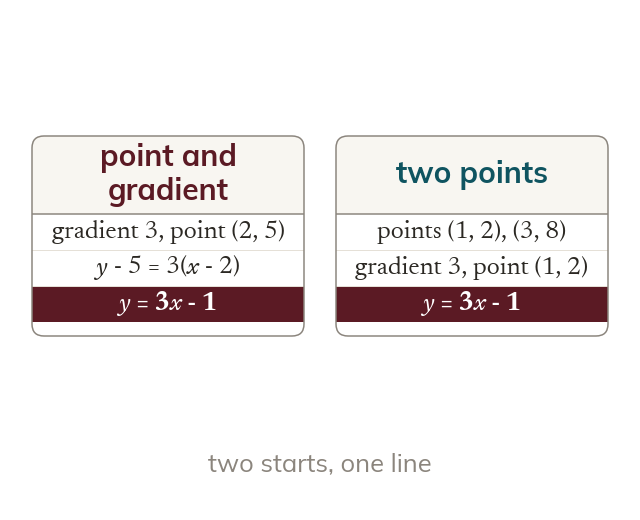

Choosing the form
A point and a gradient go straight into y - y1 = m(x - x1). With two points, the gradient comes first. Either point then gives the same line.
Use y - y1 = m(x - x1) when you know a point and the gradient. With two points, find the gradient first and then use either point. Both give the same line.